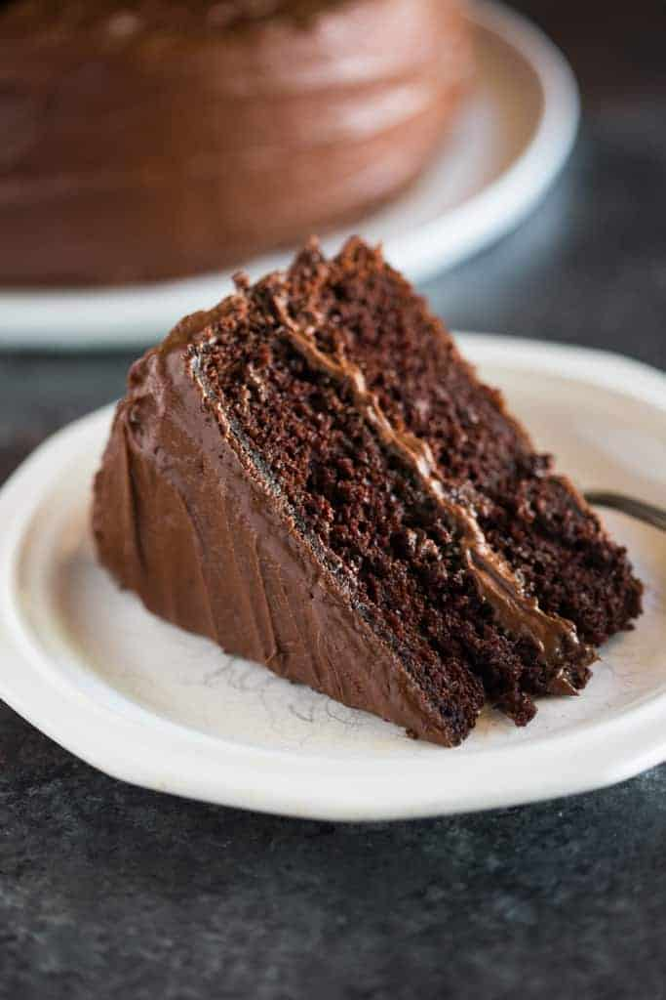

Hershey's "perfectly chocolate" Chocolate Cake

Hershey’s “perfectly chocolate” Chocolate Cake with 5 ingredient chocolate frosting is a delicious homemade chocolate cake recipe! Extra moist, with a perfect rich chocolate flavor and tender, smooth crumb.
.
Ingredients
- cups granulated sugar
- 1 ¾ cup + 2 Tablespoons all-purpose flour
- 3/4 cup unsweetened cocoa powder
- 1 1/2 teaspoons baking powder
- 1 1/2 teaspoons baking soda
- 1 teaspoon salt
- 2 large eggs
- 1 cup buttermilk
- 1/2 cup oil (vegetable or canola oil)
- 2 teaspoons vanilla extract
- 1 cup boiling water , or hot coffee
Chocolate Frosting
- 1/2 cup melted butter
- 2/3 cup unsweetened cocoa powder
- 3 cups powdered sugar
- 1/3 cup milk
- 1 teaspoon vanilla extract
Instructions
- Heat oven to 350°F. Line two 8 inch round baking pans with parchment paper and then spray lightly with non-stick cooking spray. Set aside.
- Stir together sugar, flour, cocoa, baking powder, baking soda and salt in large bowl.
- Add eggs, milk, oil and vanilla and mix until well combined.
- Stir in boiling water (or hot coffee). Batter will be thin, but that's okay! Pour batter into prepared pans.
- Bake 30 to 35 minutes or until a toothpick inserted in the center of the cake comes out clean.
Chocolate Frosting
- Combine butter and cocoa powder.
- Cut and serve.